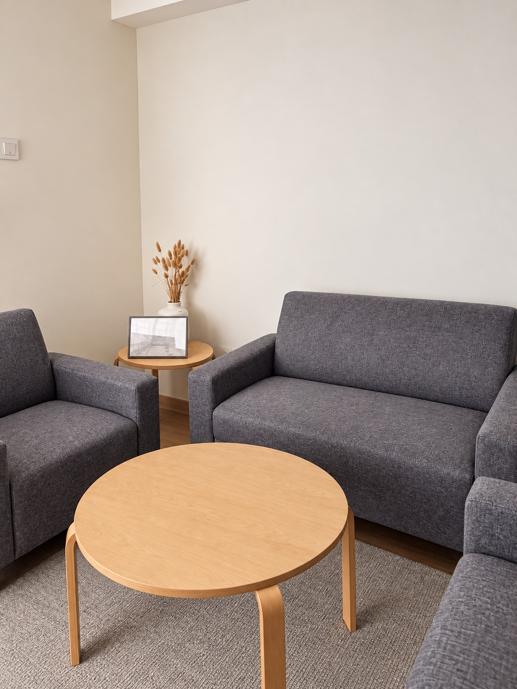

Individual
psychotherapy.
Support for anxiety, low mood, grief, relationship difficulties, self-criticism, and life transitions.
Explore psychotherapySide by Psych · Ampang, Malaysia
Space to understand yourself.
Individual psychotherapy in Ampang and online across Malaysia.

Psychological services
You don't need to have everything figured out before seeking support. We can begin with where you are.
Support for anxiety, low mood, grief, relationship difficulties, self-criticism, and life transitions.
Explore psychotherapyAssessment where clinically appropriate, to help understand your concerns and discuss next steps.
Ask about assessmentPsychological education for individuals, families, schools, workplaces, and communities.
Enquire about workshopsMeet your psychologist
Registered Clinical Psychologist.
Founder of Side by Psych.
I offer a calm, collaborative space to explore difficult emotions, understand yourself, and navigate relationships. My work is primarily guided by Emotion Focused Therapy, adapted to your needs and pace.
My experience spans a private psychiatric clinic, schools, community and NGO settings, and private practice. At the psychiatric clinic, I worked alongside psychiatrists to support people experiencing depression, anxiety, psychosis, and suicidal distress. I have also worked with children and adolescents in school and community settings.
Having taught psychology at tertiary level and contributed to psychological research and publications, I value making psychology accessible and useful in everyday life.
My work is also informed by CBT, ACT, DBT, and mindfulness-based approaches, adapted to each client's needs.
Education: Master of Clinical Psychology, University of Cyberjaya; Bachelor of Psychology (First Class Honours), Universiti Tunku Abdul Rahman.
Languages: English and Mandarin, with conversational support in Cantonese where appropriate.
Emotion Focused Therapy
Emotion Focused Therapy involves experiencing, understanding, and working with emotions. Together, we explore their meaning and develop more helpful emotional responses, with attention to what feels manageable.
Discover Emotion Focused Therapy
Your space in Ampang
A quiet, private setting for meaningful conversations. Appointments are arranged in advance, with evening sessions available up to 10pm, subject to availability.
What to expect from your visitSessions are available in English and Mandarin.
了解中文心理服务Sessions & fees
Individual psychotherapy. At least 60 minutes per session.
Available by appointment, with suitability discussed together.
At the Ampang centre
RM150 / session
Private, face-to-face conversations in a dedicated therapeutic space.
Four-session packages from RM500
Enquire about in-person sessionsAcross Malaysia
RM100 / session
Therapy from a private space of your own, where clinically suitable.
Four-session packages from RM360
Enquire about online sessionsPackage suitability can be discussed before purchase. Assessment, reports, and other professional services are quoted separately. Please give at least 12 hours' notice for cancellations or rescheduling. Rescheduling is subject to availability.
Your first step
Share your preferred session format and a brief note about the support you're looking for.
We'll discuss availability, fees, and whether the service is suitable for your needs.
Your first session is a chance to talk, ask questions, and explore what brought you here.
Frequently asked questions
It's okay to have questions.
No. Many people come because they feel stuck, overwhelmed, self-critical, anxious, low, or unsure how to make sense of what they are feeling.
EFT goes beyond talking about feelings. It involves experiencing and exploring emotions, managing overwhelm, and working towards emotional change within a collaborative therapeutic relationship.
Online sessions may be arranged depending on fit and clinical needs. Face-to-face appointments in Ampang are available daily up to 10pm, subject to availability.
A little preparation helps you focus on the conversation:
Your therapist also needs a private, quiet space. Headphones can help with privacy and sound quality, but cannot stop others hearing your own voice.
Yes. At Side by Psych, both the client and therapist keep their cameras on during online sessions so we can see each other clearly. Position your camera so your face is visible, with light in front of you rather than a bright window behind you.
If using a camera is difficult or raises concerns for you, please discuss this before your appointment so we can consider a suitable arrangement.
Please tell us before your appointment if you may be interrupted, overheard, or unable to use video reliably. We can discuss whether a different time, a more private location, or an in-person session would be more suitable.
Agree a backup contact method with your therapist before starting. If someone enters the room or you feel privacy is lost, pause the conversation and let your therapist know. If the call drops, use the agreed contact method to decide the next step.
Sessions are handled with professional confidentiality, within the usual ethical and legal limits, such as risk of harm, safeguarding concerns, or legal requirements.
In-person individual psychotherapy is RM150 and online psychotherapy is RM100, for at least 60 minutes. Four-session packages start at RM500 in person and RM360 online. Assessment, reports, and other services are quoted separately.
The centre is not an emergency service. If there is immediate danger, contact local emergency services, go to the nearest hospital emergency department, or reach out to a crisis helpline.
Whenever you're ready
Ask about availability, session options, or whether this service is a suitable next step.
A-6-1, Merdeka Place Jalan MPL,
Jalan Merdeka, 68000 Ampang, Selangor
By appointment only. Please ask about current availability.
If you or someone else is in immediate danger, contact local emergency services, go to the nearest hospital emergency department, or reach out to a crisis helpline.